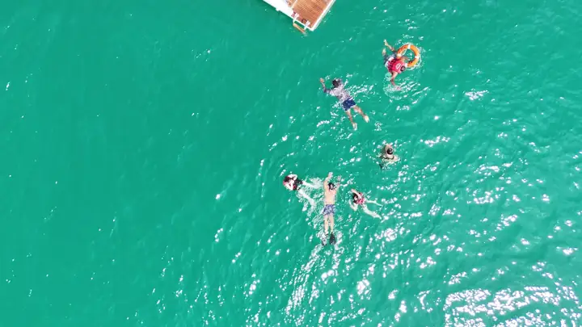
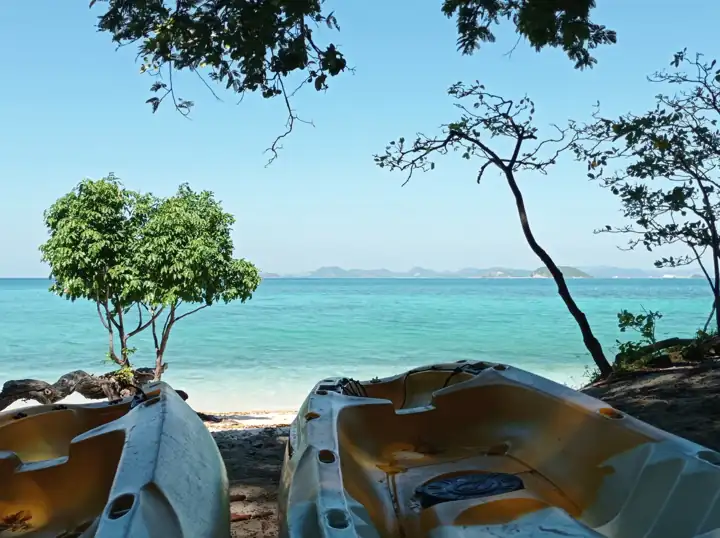
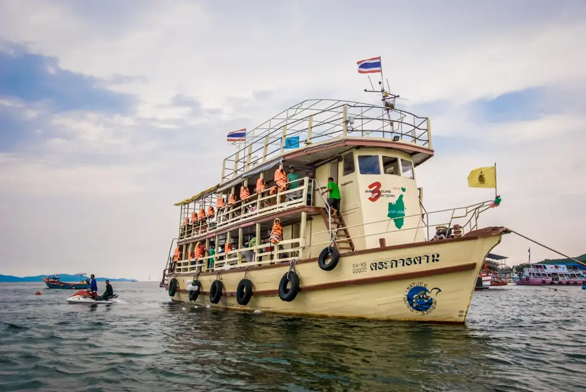
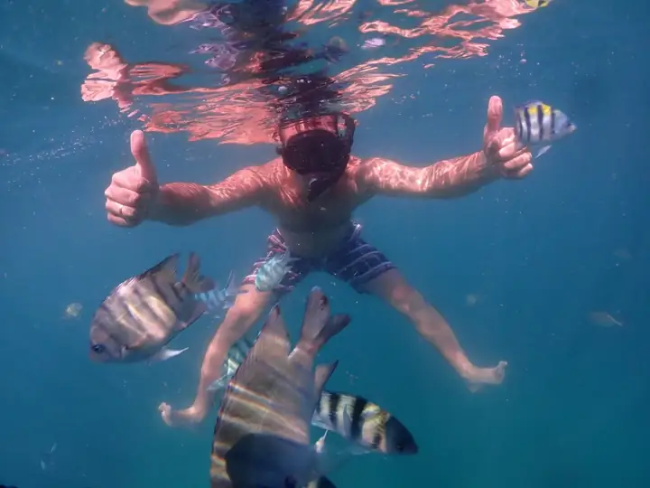
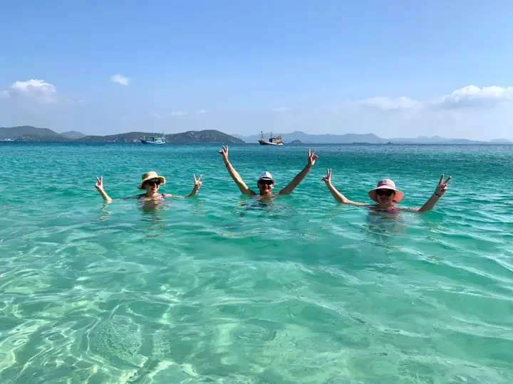

Острова и море
Морские прогулки на катамаранах и круизы по островам Паттайи: Ко Лан, Ко Самет, Ко Талу и другие. Снорклинг, пляжи, обеды на борту. В категории 22 программ, цены от 399 ฿.
Найдено: 22. Цены в батах (฿) за человека; детские цены — для указанного возраста.
 Острова и море
Острова и мореОстров Самет и Фаер-шоу
взрослый1 900 ฿
дети 1 700 ฿
 Острова и море
Острова и мореBamboo Морская Экскурсия
взрослый2 300 ฿
дети 1 300 ฿
 Острова и море
Острова и мореВоенный Пляж — Сай Кео
взрослый399 ฿
дети 349 ฿
Острова и мореПляж Танцующей Девушки — Саттахип
взрослый399 ฿
дети 349 ฿
Острова и мореКо Самет на 1 День
взрослый949 ฿
дети 649 ฿

Острова и мореКатамаран "Серенити"
взрослый2 699 ฿
дети 1 399 ฿
Острова и море
Остров Принцессы
взрослый2 200 ฿
дети 1 700 ฿

Острова и мореИзумрудный Остров
взрослый2 200 ฿
дети 1 700 ฿

Острова и море3 Чудо Острова Паттайя
взрослый2 000 ฿
дети 1 000 ฿

Острова и мореПодводная Одиссея
взрослый2 400 ฿
дети 2 000 ฿
Острова и мореКруиз "Ocean Yachting Sunset"
взрослый3 199 ฿
дети 1 599 ฿

Острова и море5 Островов
взрослый2 999 ฿
дети 2 099 ฿
Острова и море
Остров Сабай
взрослый2 500 ฿
дети 2 000 ฿
Острова и море
Секретный Остров
взрослый2 300 ฿
дети 1 600 ฿
Острова и мореКо Талу — Розовый Остров
взрослый1 999 ฿
дети 1 499 ฿
 Острова и море
Острова и мореЧерная Жемчужина
от1 600 ฿
дети 1 400 ฿
 Острова и море
Острова и мореФотоохота на Китов Брайда
взрослый3 799 ฿
дети 3 599 ฿
Острова и мореМорское Дискавери
взрослый2 700 ฿
дети 2 200 ฿
Острова и море
Тропический Круиз по 9 Островам
взрослый2 199 ฿
дети 1 799 ฿
Острова и мореКруиз "Orange Sail"
взрослый3 200 ฿
дети 2 200 ฿
Острова и море
Круиз "Party Island"
от1 800 ฿
дети 900 ฿
Острова и море
Pattaya Bay Cruise
взрослый2 300 ฿
дети 1 500 ฿
| Экскурсия | Дни | Время | Взрослый | Ребёнок | |
|---|---|---|---|---|---|
| Остров Самет и Фаер-шоу Острова и море | Вт, Пт | 07:30–23:00 | 1 900 ฿ | 1 700 ฿ | |
| Bamboo Морская Экскурсия Острова и море | Ежедневно | 08:00–17:30 | 2 300 ฿ | 1 300 ฿ | |
| Военный Пляж — Сай Кео Острова и море | Ежедневно | 08:00–16:00 | 399 ฿ | 349 ฿ | |
| Пляж Танцующей Девушки — Саттахип Острова и море | Ежедневно | 08:00–16:00 | 399 ฿ | 349 ฿ | |
| Ко Самет на 1 День Острова и море | Ежедневно | 07:30–18:00 | 949 ฿ | 649 ฿ | |
| Катамаран "Серенити" Острова и море | Ежедневно | 09:00–17:00 | 2 699 ฿ | 1 399 ฿ | |
| Остров Принцессы Острова и море | Пн, Ср, Пт | 08:00–18:30 | 2 200 ฿ | 1 700 ฿ | |
| Изумрудный Остров Острова и море | Вт, Чт, Вс | 08:00–18:30 | 2 200 ฿ | 1 700 ฿ | |
| 3 Чудо Острова Паттайя Острова и море | Вт, Чт, Сб | 09:00–16:30 | 2 000 ฿ | 1 000 ฿ | |
| Подводная Одиссея Острова и море | Вт, Чт, Сб | 07:30–18:30 | 2 400 ฿ | 2 000 ฿ | |
| Круиз "Ocean Yachting Sunset" Острова и море | Ежедневно | 09:45–18:45 | 3 199 ฿ | 1 599 ฿ | |
| 5 Островов Острова и море | Ср, Сб | 08:30–17:30 | 2 999 ฿ | 2 099 ฿ | |
| Остров Сабай Острова и море | Вт, Чт, Сб | 08:30–15:30 | 2 500 ฿ | 2 000 ฿ | |
| Секретный Остров Острова и море | Пн, Чт | 07:30–18:30 | 2 300 ฿ | 1 600 ฿ | |
| Ко Талу — Розовый Остров Острова и море | Вт, Пт, Вс | 07:30–18:00 | 1 999 ฿ | 1 499 ฿ | |
| Черная Жемчужина Острова и море | Ср, Вс | 10:00–17:30 | 1 600 ฿ | 1 400 ฿ | |
| Фотоохота на Китов Брайда Острова и море | По запросу | 3 799 ฿ | 3 599 ฿ | ||
| Морское Дискавери Острова и море | Пн, Ср, Сб | 06:30–19:00 | 2 700 ฿ | 2 200 ฿ | |
| Тропический Круиз по 9 Островам Острова и море | Чт | 07:30–19:00 | 2 199 ฿ | 1 799 ฿ | |
| Круиз "Orange Sail" Острова и море | Вт, Чт, Сб, Вс | 09:30–18:30 | 3 200 ฿ | 2 200 ฿ | |
| Круиз "Party Island" Острова и море | Вт, Пт | 08:30–17:30 | 1 800 ฿ | 900 ฿ | |
| Pattaya Bay Cruise Острова и море | Ср, Вс | 08:30–17:30 | 2 300 ฿ | 1 500 ฿ |
Ничего не найдено — попробуйте другой запрос или напишите нам, подберём вручную.